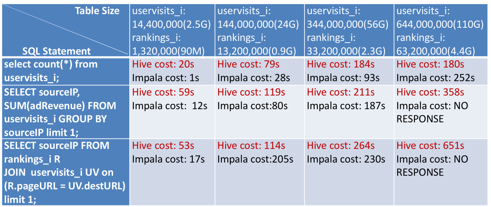

- 00 开篇词 为什么说每个软件工程师都应该懂大数据技术？.md
- 01 大数据技术发展史：大数据的前世今生.md
- 02 大数据应用发展史：从搜索引擎到人工智能.md
- 03 大数据应用领域：数据驱动一切.md
- 04 移动计算比移动数据更划算.md
- 05 从RAID看垂直伸缩到水平伸缩的演化.md
- 06 新技术层出不穷，HDFS依然是存储的王者.md
- 07 为什么说MapReduce既是编程模型又是计算框架？.md
- 08 MapReduce如何让数据完成一次旅行？.md
- 09 为什么我们管Yarn叫作资源调度框架？.md
- 10 模块答疑：我们能从Hadoop学到什么？.md
- 11 Hive是如何让MapReduce实现SQL操作的？.md
- 12 我们并没有觉得MapReduce速度慢，直到Spark出现.md
- 13 同样的本质，为何Spark可以更高效？.md
- 14 BigTable的开源实现：HBase.md
- 15 流式计算的代表：Storm、Flink、Spark Streaming.md
- 16 ZooKeeper是如何保证数据一致性的？.md
- 17 模块答疑：这么多技术，到底都能用在什么场景里？.md
- 18 如何自己开发一个大数据SQL引擎？.md
- 19 Spark的性能优化案例分析（上）.md
- 20 Spark的性能优化案例分析（下）.md
- 21 从阿里内部产品看海量数据处理系统的设计（上）：Doris的立项.md
- 22 从阿里内部产品看海量数据处理系统的设计（下）：架构与创新.md
- 23 大数据基准测试可以带来什么好处？.md
- 24 从大数据性能测试工具Dew看如何快速开发大数据系统.md
- 25 模块答疑：我能从大厂的大数据开发实践中学到什么？.md
- 26 互联网产品 + 大数据产品 = 大数据平台.md
- 27 大数据从哪里来？.md
- 28 知名大厂如何搭建大数据平台？.md
- 29 盘点可供中小企业参考的商业大数据平台.md
- 30 当大数据遇上物联网.md
- 31 模块答疑：为什么大数据平台至关重要？.md
- 32 互联网运营数据指标与可视化监控.md
- 33 一个电商网站订单下降的数据分析案例.md
- 34 A_B测试与灰度发布必知必会.md
- 35 如何利用大数据成为“增长黑客”？.md
- 36 模块答疑：为什么说数据驱动运营？.md
- 37 如何对数据进行分类和预测？.md
- 38 如何发掘数据之间的关系？.md
- 39 如何预测用户的喜好？.md
- 40 机器学习的数学原理是什么？.md
- 41 从感知机到神经网络算法.md
- 42 模块答疑：软件工程师如何进入人工智能领域？.md
- 所有的不确定都是机会——智慧写给你的新年寄语.md
- 第2季回归丨大数据之后，让我们回归后端.md
- 结束语 未来的你，有无限可能.md
23 大数据基准测试可以带来什么好处？
2012年的时候，Hadoop已经日趋成熟，Intel的大数据团队也正准备寻找新的技术研究方向。当时，我们对比测试了多个新出来的大数据技术产品，最终选择了Spark重点跟进参与。现在看来，这是一个明智的决定，作出这个决定是基于大数据基准测试，而使用的对比测试工具就是我今天要讲的大数据基准测试工具HiBench。
大数据作为一个生态体系，不但有各种直接进行大数据处理的平台和框架，比如HDFS、MapReduce、Spark，还有很多周边的支撑工具，而大数据基准测试工具就是其中一个大类。
大数据基准测试的应用
大数据基准测试的主要用途是对各种大数据产品进行测试，检验大数据产品在不同硬件平台、不同数据量、不同计算任务下的性能表现。
上面这样讲大数据基准测试的用途可能比较教条，我举两个例子你就能明白它的应用有多么重要了。
还是回到2012年，当时Hive只能做离线的SQL查询计算，无法满足数据分析师实时交互查询的需求，业界需要一款更快的ad hoc query（即席查询，一种非预设查询的SQL访问）工具。在这种情况下，Cloudera推出了准实时SQL查询工具Impala。Impala兼容Hive的Hive QL语法和Hive MetaSotre，也支持Hive存储在HDFS的数据表，但是放弃了Hive较慢的MapReduce执行引擎，而是基于MPP（Massively Parallel Processing，大规模并行处理）的架构思想重新开发了自己的执行引擎，从而获得更快的查询速度。
由于Cloudera在大数据领域的巨大权威，加上人们对快速SQL查询的期待，Impala在刚推出的时候，受到大数据业界的极大瞩目。当时，我也立即用四台服务器部署了一个小集群，利用大数据基准测试工具HiBench对Impala和Hive做了一个对比测试。

但是经过对比测试以后，我发现情况并不乐观。Impala性能有优势的地方在于聚合查询，也就是用group by查询的SQL语句；而对于连接查询，也就是用join查询的SQL语句性能表现很差。我进一步阅读Impala的源代码，对设计原理和架构进行分析后，得出了自己的看法，我认为适合Impala的应用场景有两类：
一类是简单统计查询，对单表数据进行聚合查询，查看数据分布规律。
一类是预查询，在进行全量数据的SQL查询之前，对抽样数据进行快速交互查询，验证数据分析师对数据的判断，方便数据分析师后续设计全量数据的查询SQL，而全量数据的SQL还是要运行在Hive上。
这样Impala就有点尴尬了，它的定位似乎只是Hive的附属品。这就好比Impala是餐前开胃菜和餐后甜点，而正餐依然是Hive。
但是Cloudera却对Impala寄予厚望，后来我和Cloudera的工程师聊天，得知他们投入了公司近一半的工程师到Impala的开发上，我还是有点担心。事实上，这么多年过去了，Impala经过不断迭代，相比最开始的性能有了很大改进，但是我想，Impala依然没有承担起Cloudera对它的厚望。
跟Impala相对应的是，同样是2012年，Intel大数据团队用大数据基准测试工具HiBench对Spark和MapReduce做了对比测试后发现，Spark运行性能有令人吃惊的表现。当时Intel大数据团队的负责人戴老师（Jason Dai）立即飞到美国，跟当时开发Spark的UC Berkeley的AMP实验室交流，表示Intel愿意参与到Spark的开发中。Spark也极其希望有业界巨头能够参与其中，开发代码尚在其次，重要的是有了Intel这样的巨头背书，Spark会进一步得到业界的认可和接受。
所以Intel成了Spark最早的参与者，加速了Spark的开发和发展。当2013年Spark加入Apache的开源计划，并迅速成为Apache的顶级项目，风靡全球的大数据圈子时，Intel作为早期参与者，也得到了业界的肯定，使Intel在大数据领域可以保持持续的影响力。
在这个案例里，所有各方都是赢家，Spark、Intel、Apache，乃至整个大数据行业，我作为Intel参与Spark早期开发的工程师，也都因此而受益。这也是我关于工作的一个观点：好的工作不光是对公司有利，对员工也是有利的。工作不是公司在压榨员工的过程，而是公司创造价值，同时员工实现自我价值的过程。
而如何才能创造出好的工作也不只是公司的责任，主要还是要靠员工自己，去发现哪些事情能够让自己、公司、社会都获益，然后去推动这些事情的落实，虽然有的时候推动比发现更困难。同时拥有发现和推动能力的人，毫无例外都是一些出类拔萃的人，比如专栏前面也提到的Intel的戴老师，这些人都是我工作的榜样。
大数据基准测试工具HiBench
大数据基准测试工具有很多，今天我重点为你介绍前面我多次提到的，也是Intel推出的大数据基准测试工具HiBench。
HiBench内置了若干主要的大数据计算程序作为基准测试的负载（workload）。
Sort，对数据进行排序大数据程序。
WordCount，前面多次提到过，词频统计大数据计算程序。
TeraSort，对1TB数据进行排序，最早是一项关于软件和硬件的计算力的竞赛，所以很多大数据平台和硬件厂商进行产品宣传的时候会用TeraSort成绩作为卖点。
Bayes分类，机器学习分类算法，用于数据分类和预测。
k-means聚类，对数据集合规律进行挖掘的算法。
逻辑回归，数据进行预测和回归的算法。
SQL，包括全表扫描、聚合操作（group by）、连接操作（join）几种典型查询SQL。
PageRank，Web排序算法。
此外还有十几种常用大数据计算程序，支持的大数据框架包括MapReduce、Spark、Storm等。
对于很多非大数据专业人士而言，HiBench的价值不在于对各种大数据系统进行基准测试，而是学习大数据、验证自己大数据平台性能的工具。
对于一个刚刚开始入门大数据的工程师而言，在自己的电脑上部署了一个伪分布式的大数据集群可能并不复杂，对着网上的教程，顺利的话不到1个小时就可以拥有自己的大数据集群。
但是，接下来呢？开发MapReduce程序、打包、部署、运行，可能这里每一步都会遇到很多挫折。即使一切顺利，但顾名思义对于“大数据”来说，需要大量的数据才有意义，那数据从哪儿来呢？如果想用一些更复杂的应用体验下大数据的威力，可能遇到的挫折就更多了，所以很多人在安装了Hadoop以后，然后就放弃了大数据。
对于做大数据平台的工程师，如果等到使用者来抱怨自己维护的大数据平台不稳定、性能差的时候，可能就有点晚了，因为这些消息可能已经传到老板那里了。所以必须自己不停地跑一些测试，了解大数据平台的状况。
有了HiBench，这些问题都很容易就可以解决，HiBench内置了主要的大数据程序，支持多种大数据产品。最重要的是使用特别简单，初学者可以把HiBench当作学习工具，可以很快运行起各种数据分析和机器学习大数据应用。大数据工程师也可以用HiBench测试自己的大数据平台，验证各种大数据产品的性能。
HiBench使用非常简单，只需要三步：
1.配置，配置要测试的数据量、大数据运行环境和路径信息等基本参数。
2.初始化数据，生成准备要计算的数据，比如要测试1TB数据的排序，那么就生成1TB数据。
3.执行测试，运行对应的大数据计算程序。
具体初始化和执行命令也非常简单，比如要生成数据，只需要运行bin目录下对应workload的prepare.sh就可以自动生成配置大小的数据。
bin/workloads/micro/terasort/prepare/prepare.sh
要执行大数据计算，运行run.sh就可以了。
bin/workloads/micro/terasort/hadoop/run.sh
bin/workloads/micro/terasort/spark/run.sh
小结
同一类技术问题的解决方案绝不会只有一个，技术产品也不会只有一个，比如大数据领域，从Hadoop到Spark再到Flink，各种大数据产品层出不穷，那么如何对比测试这些大数据产品，在不同的应用场景中它们各自的优势是什么？这个时候就需要用到基准测试工具，通过基准测试工具，用最小的成本得到我们想测试的结果。
所以除了大数据，在很多技术领域都有基准测试，比如数据库、操作系统、计算机硬件等。前几年手机领域的竞争聚焦在配置和性能上，各路发烧友们比较手机优劣的时候，口头禅就是“跑个分试试”，这也是一种基准测试。
因此基准测试对这些产品而言至关重要，甚至攸关生死。得到业界普遍认可的基准测试工具就是衡量这些产品优劣的标准，如果能使基准测试对自己的产品有利，更是涉及巨大的商业利益。我在Intel开始做SQL引擎开发，后来做Spark开发，需要调查各种数据库和大数据的基准测试工具，也就是在那个时候，我发现华为这家公司还是很厉害的，在很多基准测试标准的制定者和开发者名单中，都能看到华为的名字，而且几乎是唯一的中国公司。
有时候我们想要了解一个大数据产品的性能和用法，看了各种资料花了很多时间，最后得到的可能还是一堆不靠谱的N手信息。但自己跑一个基准测试，也许就几分钟的事，再花点时间看看测试用例，从程序代码到运行脚本，很快就能了解其基本用法，更加省时、高效。
思考题
今天文章的Impala VS Hive的基准测试报告里，发现当数量很大的时候做join查询，Impala会失去响应，是因为Impala比Hive更消耗内存，当内存不足时，就会失去响应。你能否从Impala的架构和技术原理角度分析为什么Impala比Hive更消耗内存？
欢迎你点击“请朋友读”，把今天的文章分享给好友。也欢迎你写下自己的思考或疑问，与我和其他同学一起讨论。
© 2019 - 2023 Liangliang Lee. Powered by gin and hexo-theme-book.